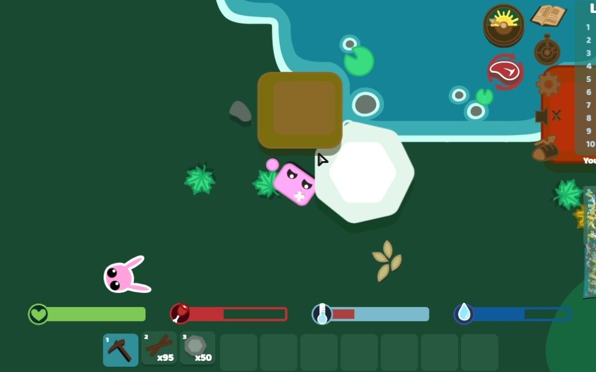
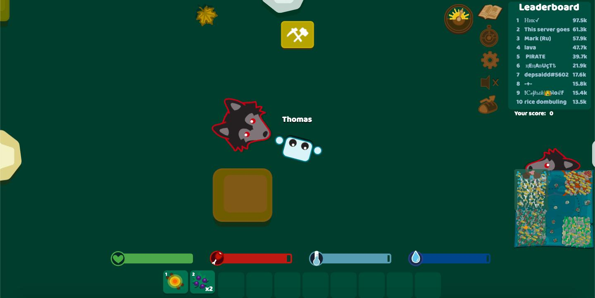
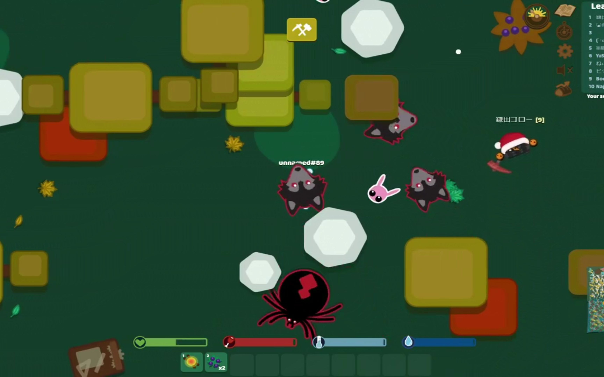

Starve.io is a multiplayer sandbox survival game that drops you into a harsh 2D wilderness with nothing but your bare hands. Unlike simpler .io games, Starve.io features deep crafting systems, multiple dangerous biomes, taming mechanics, and intense PvP combat. I remember my first night—frozen, starving, surrounded by wolves, with nothing but a campfire and a wooden sword. That adrenaline rush hooked me instantly.
🎮 Game Basics & Controls

What is Starve.io?
Starve.io is a browser-based multiplayer survival game where you start with nothing and must gather resources, craft tools, build shelters, and fight creatures to survive. The game features a persistent level system, seasonal resets, and multiple game modes including Normal, Zombie, Vampire, and Experimental servers.
Controls Overview
WASD moves your character. Left-click attacks or gathers resources. Right-click places structures. Press E to interact with objects and pick up items. C opens the crafting menu, B opens the build menu, I opens your inventory, and M shows the map. You can also press Y to open the full map and Enter to chat with other players.
Survival Bars
Four critical bars manage your survival: the green heart bar (Health), the red bar (Hunger), the blue-white thermometer bar (Temperature), and the blue water drop bar (Hydration). When any of these drops to zero, you begin losing health. Managing all four simultaneously is the core challenge of Starve.io.
Starve.io operates on a seasonal cycle. When a new season begins, your level resets to 0 but your previous score is saved in the season archive. Season medals display your historical achievements, giving veteran players recognition even after resets.
🌡️ Survival Mechanics

Hunger Management
Your hunger bar depletes constantly. Eat berries, cooked meat, cookies, cake, or sandwiches to keep it full. Berries are the easiest early-game food—just hit berry bushes to collect them. Cook raw meat over a campfire for much better nutrition. For long AFK sessions, you need roughly 216 berries or 22 cakes per hour to maintain full hunger.
Temperature Control
Temperature drops at night and in cold biomes. Build campfires, wear warmer clothing (fur hat, coat, chapka), or stay under roofs to maintain warmth. In the Lava biome, you face the opposite problem—temperatures rise lethally and you need ice from the Winter biome to cool down. A Fur Hat is essential for maintaining stable temperature in the Forest biome.
Hydration
Stay near water sources and use bottles to collect water. Your base should always be built adjacent to a water source. Build bridges over water so you can drink without drowning. In the Winter biome, liquid water is unavailable—you must collect ice and melt it near a heat source.
Day/Night Cycle
Night is significantly more dangerous. Temperatures drop rapidly, hostile mobs become more aggressive, and visibility decreases. Always have a campfire ready before nightfall. The best time to spawn is late at night, as you can gather basic tools before sunrise without wasting daylight.
⚒️ Crafting & Resources
Resource Types
The game features nine main resource types: Wood (from trees), Stone (from rocks), Gold, Diamonds (found only in the Winter cave), Amethysts (Winter cave), Reidite (Lava biome only), Emeralds (Desert biome), Sand (beach areas), and Ice (Winter biome). Each resource tier unlocks progressively better equipment.
Tool Progression
Start with bare hands and craft a Wooden Pickaxe (10 wood) immediately. Upgrade through Stone, Gold, Diamond, Amethyst, and finally Dragon-tier tools. Higher-tier tools gather resources faster and deal more damage. A point of community debate is whether swords or spears are better—swords grind faster for resources, while spears offer better combat range.
Weapon Tiers
Weapons follow a clear progression: Wooden → Stone → Golden → Diamond → Amethyst → Dragon → Reidite. Each tier includes swords, spears, bows, and shields. The Reidite Sword is the most powerful melee weapon and deals bonus damage against Lava Monsters. Bows require arrows (one per shot) and cannot shoot through walls or resource deposits.
Always prioritize: 1) Berries for food, 2) Wood for tools and campfire, 3) Stone for upgrades. Never skip the campfire—it is your lifeline against nighttime freezing.
🗺️ Biome Guide

Forest Biome
Your starting area and safest zone. Rich in wood, stone, gold, and berries. Home to rabbits, wolves, spiders, boars, and hawks. The beach area provides sand, and crabs and king crabs spawn near water. Bodies of water replenish your thirst bar, but don't stay too long or you'll lose temperature and oxygen.
Winter Biome
The coldest biome, dropping your temperature rapidly. Contains trees, stones, gold, and diamonds (exclusive to this biome). Three amethyst nodes sit inside the cave. Food comes from arctic foxes, polar bears, mammoths, and penguins—all harder to kill than Forest mobs. Blizzards occur frequently, dealing damage every 4 seconds unless you are under a roof or wearing a desert hat.
Lava Biome
Lethally hot temperatures that rise regardless of time of day. The only source of Reidite, one of the most valuable resources. Spawns Lava Monsters, Lava Dragons, and Baby Lava Dragons. Bring ice from the Winter biome to survive here. The Reidite Sword is especially effective against Lava Monsters.
Desert Biome
A harsh environment where sandstorms can occur at any time, dealing damage unless you are under a roof or wearing a cap/turban. Home to Sandworms that guard Emeralds. Requires careful preparation before exploring—bring food, water, and appropriate headgear.
Sea & Islands
The ocean contains a Kraken lurking in its depths. Islands scattered across the sea hide treasure chests worth the risk. Boats enable sea travel, but be prepared for the dangers that await beneath the waves.
⚔️ Combat & Weapons
PvE Combat
Hostile mobs include wolves (fast, aggressive), spiders (can web you), and biome-specific threats like Lava Monsters and Sandworms. Neutral mobs like boars and hawks become aggressive if you hit them accidentally—indicated by a red outline. Always approach mobs with a weapon ready, and use terrain like trees and rocks to block their path.
PvP Combat
Player combat is a major endgame element. Avoid players with powerful helmets early on—some are cautious hunters, others are outright savages. Diamond walls or higher keep other players out of your base. Late-game PvP revolves around controlling resource nodes and coordinating with teammates.
Taming System
You can tame Baby Mammoths (with a saddle, faster than sleds in snow), Baby Dragons, Hawks, Boars, King Crabs, and Baby Lava Dragons. Tamed creatures serve as mounts and companions. Baby Mammoths are harmless unless attacked first, making them the safest taming target.
🏠 Base Building
Location Selection
Build your base near the edge of a water source for easy drinking. Choose a spot near multiple resource deposits. Pin your location on the map (left-click the orange dot) for easy navigation. Avoid building in the open—use natural terrain features for defense.
Essential Structures
Start with a Workbench placed against a resource deposit, using it as a wall to keep mobs away. Build walls and doors for protection. Add a campfire for warmth. Include a roof to prevent mob spawns inside your base. Upgrade to Diamond walls or higher for PvP defense. Build bridges over water sources for safe drinking access.
Base Maintenance
Sleep in a bed to slow the descent of survival bars. Stockpile food and water in chests for emergencies. Keep your base roofed to prevent hostile mob spawns inside. Even with all precautions, extended AFK sessions can be dangerous—have teammates guard your base or set up auto-feeding systems.
Place your workbench against a resource deposit to create a dual-purpose structure—it serves as both a crafting station and a defensive wall. This saves resources and creates a compact, efficient base layout.
💡 Pro Survival Tips
Early Game Strategy
1) Gather berries immediately for food. 2) Collect 10 wood for a Wooden Pickaxe. 3) Find stone deposits and gather 50 stone. 4) Build a campfire before nightfall. 5) Choose a base location near water and resources. 6) Avoid combat until you have at least a stone weapon.
Mid Game Strategy
Upgrade to stone tools and build a small fortified base. Start farming food sustainably rather than relying on gathering. Explore the map carefully for gold and diamond deposits. Craft better equipment and establish multiple resource collection points.
Late Game Strategy
Focus on diamond and amethyst equipment. Build a large fortified base with multiple layers of defense. Engage in PvP combat and coordinate with teammates to control key resource nodes. Explore the Lava and Desert biomes for Reidite and Emeralds. Tame powerful creatures for combat support.
Chrono Quests
The Winter cave contains amethyst, diamonds, and maze-like walls made of depleted stones. This area is critical for several Chrono Quests and is commonly occupied by other players—both those progressing through quests and those hunting for PvP kills. Go prepared for encounters.
❓ FAQ
Is Starve.io free to play?
Yes, Starve.io is completely free to play in your web browser. There are no downloads required. Simply visit starve.io and start playing.
What game modes are available?
Starve.io offers Normal Mode, Zombie Mode, Vampire Mode, Experimental Mode, Team Mode, and Community Modes. Experimental servers let you earn golden bread but don't save scores to the official leaderboard. Private servers support custom game types like Murder Party and Hunger Games modes.
How do I survive the first night?
Immediately gather 10 wood for a pickaxe and berries for food. Find stone for basic tools. Build a campfire before dark—this is your most critical action. Stay near the fire and avoid hostile mobs. If you spawn just before dark, head to the river and look for other players' campfires.
Can I play with friends?
Yes! Team Mode is specifically designed for cooperative play. In Normal Mode, you can still ally with other players informally. Having teammates protect your base while you AFK or gather resources is a proven long-term survival strategy.
What happens when a season resets?
Your level resets to 0 but your previous season's score is archived. You keep your season medal showing your historical achievement. All in-game progress resets, so everyone starts on equal footing at the beginning of each season.
Which biome has the best resources?
Each biome offers unique resources: Forest has basic materials, Winter has Diamonds and Amethysts, Lava has Reidite, and Desert has Emeralds. The Winter cave is especially valuable as it contains both Diamonds and Amethysts in the same location. Late-game progression requires visiting all biomes.